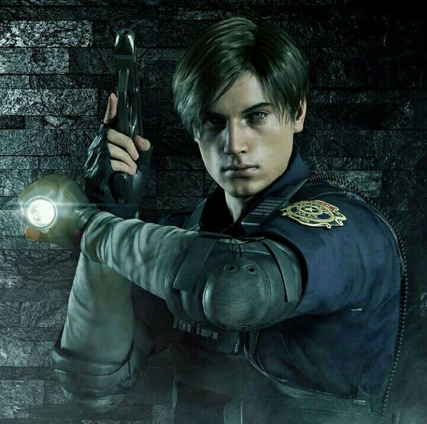
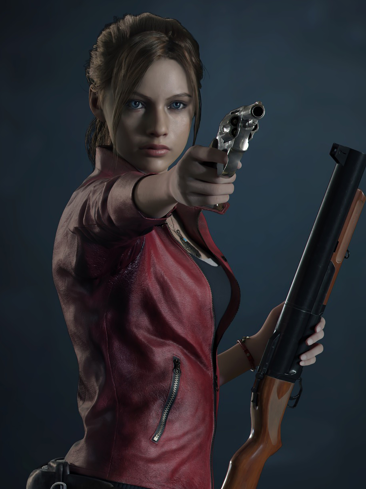
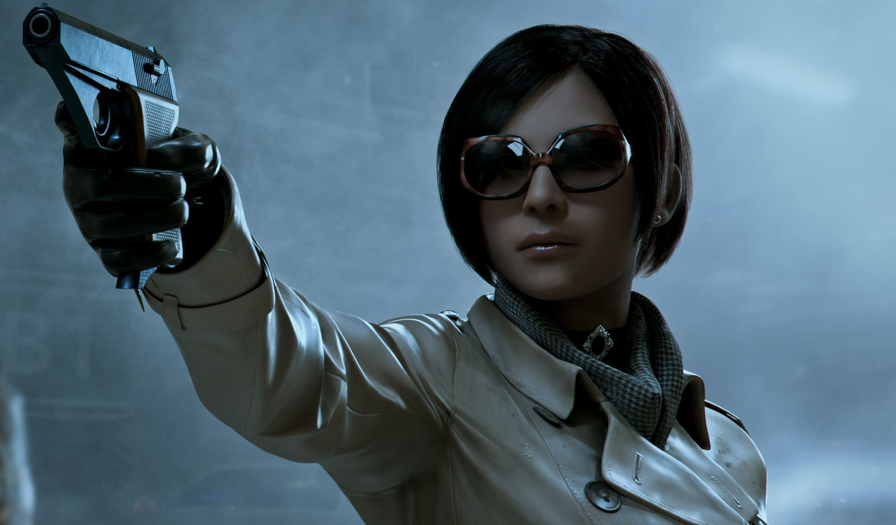
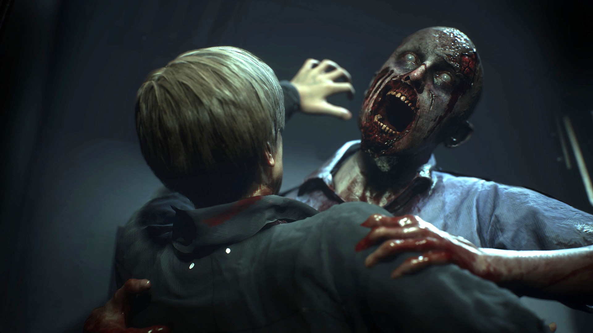
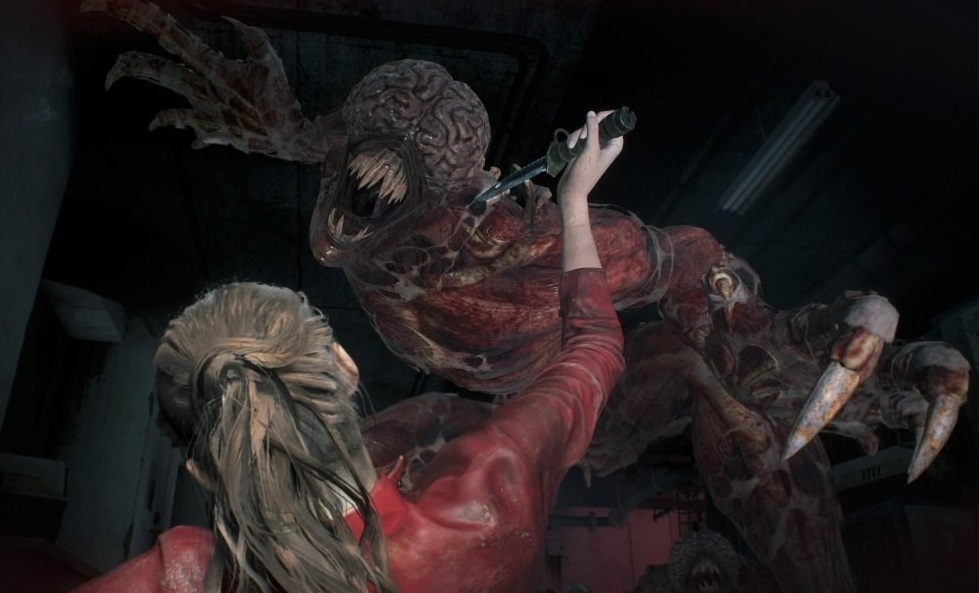
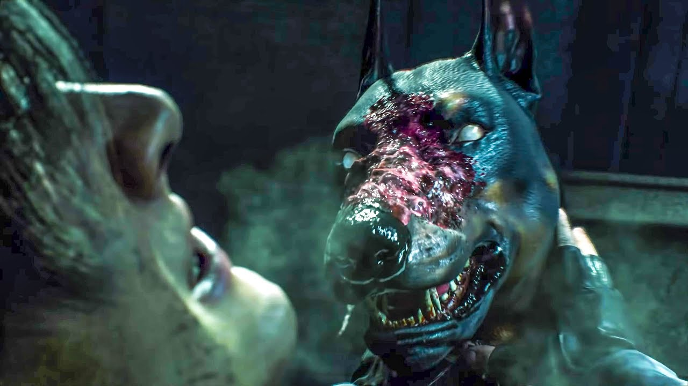
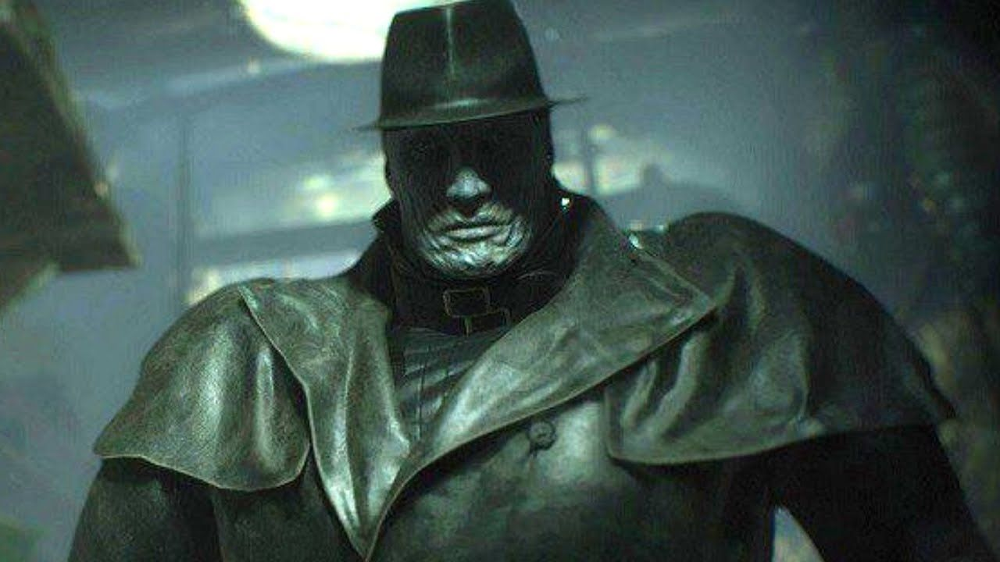
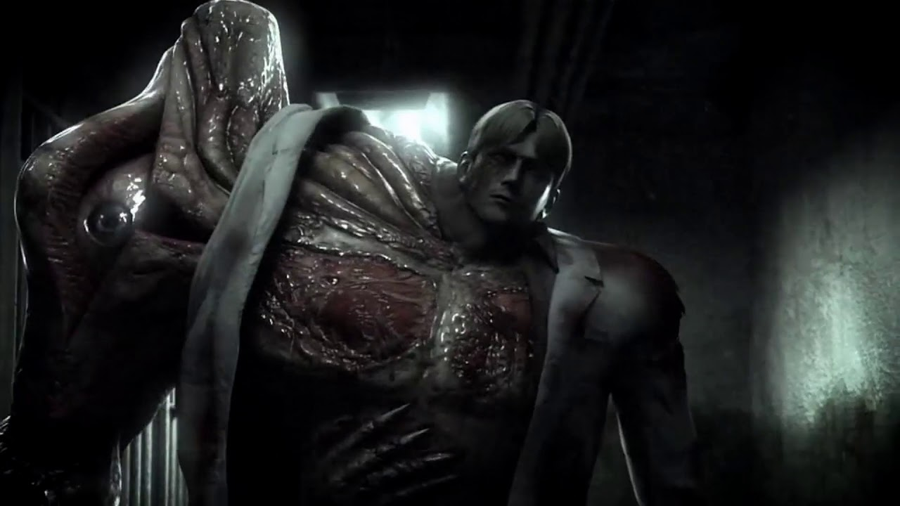

| Characters |
Role |
Background |
Loadout |
Tactics |
Quote |
| Leon Scott Kennedy |
A rookie officer that wants to start his new career at the Raccoon Police Department. Once at Raccoon City, he arrives at the Mizoil Gas Station and discovers it has been overrun by zombies and must find out what the cause of it is. |
Not too much is known about his childhood. He graduated the police academy at the age of 21. He was inspired to become an officer because of a publicized murder that occured in the Arklay Mountains. |
Matilda Handgun, W-870 Shotgun, Lighting Hawk Magnum, Chemical Flamethrower, Rocket Launcher, and the M19 Handgun. |
Leon can evade his attackers by running away, barricading windows, and using stun weapons. |
"It's still alive?!" |
| Claire Redfield |
A univerisity student who has a close bond with her brother and is trying to figure out where he is. She stops at the Mizoil Gas Station where she is overwhelmed by zombies before Leon comes in to save her. |
After her parents passed, Claire developed a huge interest in motocycle customisation once in school. She is also skilled in lockpicking and hand-to-hand combat. |
SLS 60, MQ Submachine Gun, GM 79 Gernade Launcher, JMB HP3, Spark Shot, and the Quickdraw Army Revolver. |
Claire can evade her attackers by running away, barricading windows, and using stun weapons. |
"This ends now." |
| Ada Wong |
A undercover spy tasked with obtaining the G-Virus for former Umbrella member, Dr. Albert Wesker. Becomes a romantic interest for Leon. |
She is a complete mystery since she is a spy, even her name is possibly not her own. One of the only things known from her past is that she recieved training as a spy for the Chinese syndicate. |
EMF Visualizer, which is used to hack machinery. |
Ada can evade her attackers by running away, barricading windows, and using stun weapons. |
"Stay sharp." |
| Zombie |
A victim as a result to the t-Virus, which was released accidentally through the water systems of Raccoon City. |
Each and every zombie differs since there are so many of them. |
Teeth and hands. |
They can scratch, bite, and play dead when their opponent is not suspecting them to attack. When limbless, they can crawl to their enemies. Especially deadly when they are in hoards. |
"GgggrrraaaAAHHH" |
| Licker |
A creature tainted even more by the t-Virus and much more stronger than the typical zombie. |
Each and every licker differs since there are so many of them. |
Claws and tongue. |
They are able to crawl on walls and ceilings. Lickers are very sensitve to sound since they are completely blind and if any loud noises are made, they will immediately lunge and attack using their claws and tongue. |
"Hhhhhiiissss" |
| Zombie Dog |
Animals that are also affected by the t-Virus through ingesting organisms or water having the t-virus. |
Zombie Dogs are an unwanted effect of the t-Virus spreading, being classified as irregular mutants. |
Teeth and claws. |
Can attack in groups to hunt down their victims. The more of them there are, the tougher it is to defeat them. Zombie dogs are very fast and can easily dodge bullets. |
"Grrrrr..." |
| Tyrant (T-00) |
T-00 is tasked to kill all survivors of Raccoon City and find the sample of the G-Virus. |
One of the few variants of the Tyrant (T-103 Model) that was released into Raccoon City, which are organic bio weapons used for as bodyguards, spies, or assassins. |
Hands and whole body. |
Can land devastating punches and that can crush anyone within his grasp. If his victim tries to run, he can reach for them to prevent them from escaping. Guns and other weaponry will not have any effect on killing him, only stunning him if landed enough blows. |
"..." |
| William Birkin |
By betraying Umbrella after failing to get a promotion and being shot at by the U.S. military for trying to obtain the t-Virus and G-Virus, Birkin injected himself with the last sample of the G-Virus. He soon became infected, killing the whole military squad from escaping. |
Birkin was given a doctorate in his teens for being exceptionally gifted. At the age of 15, he was hired at Umbrella Pharmaceuticals and begun working on the t-Virus and G-Virus. |
Claws, teeth, tentacles, body, and iron pipe. |
After injecting himself with his own G-Virus, he goes through numerous transformations. In the process, he loses all sense of humanity, both physically and mentally in his last transformation, which is a big blob of tentacles. |
"You don't get away that easily..." |